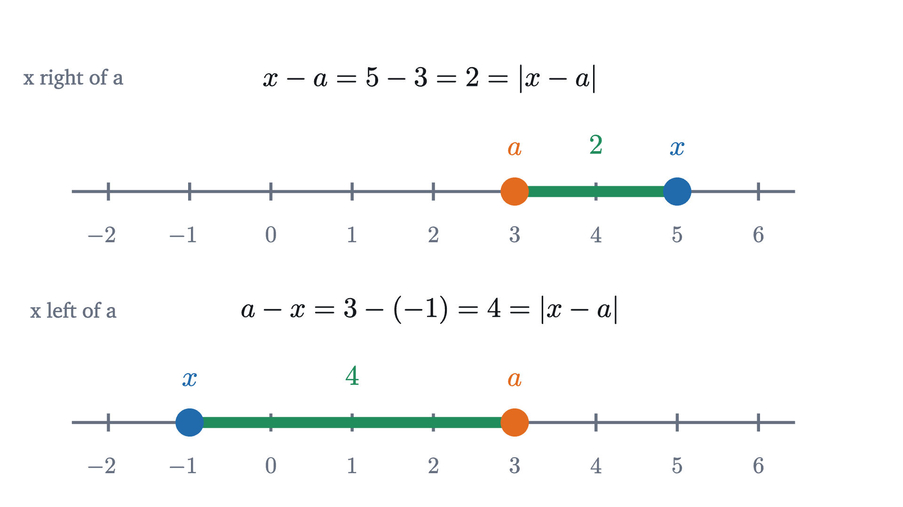
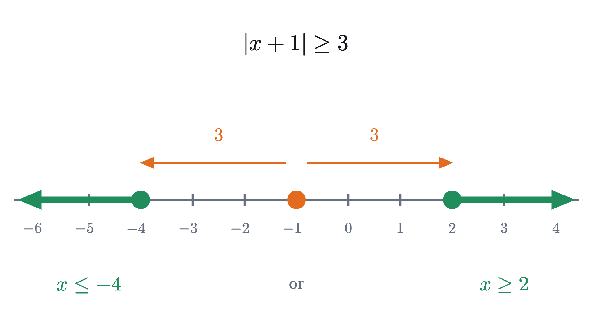
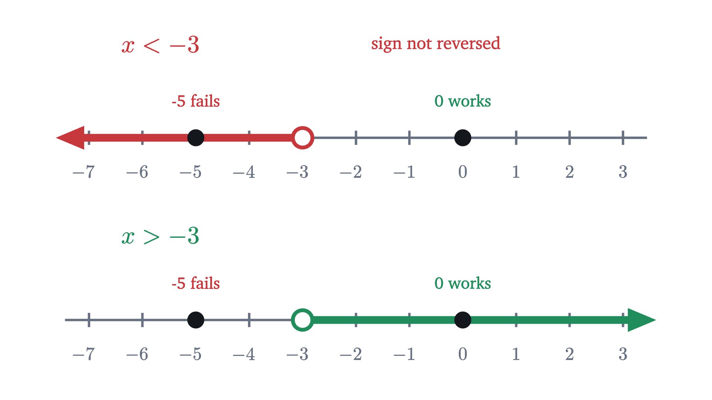

Absolute value is distance: solving |x − a| < r
Read |x − 3| < 2 as "x is within 2 of 3" and the answer, 1 < x < 5, can be seen on a number line. Also why multiplying by a negative flips an inequality.
For which numbers $x$ is $|x - 3| < 2$?
The method usually taught goes like this. The absolute value $|x - 3|$ equals $x - 3$ when that is not negative and $-(x - 3)$ when it is, so split into two cases. In the first case, $x \ge 3$ and $x - 3 < 2$, so $x < 5$. In the second, $x < 3$ and $-(x - 3) < 2$, so $x - 3 > -2$ (remembering to reverse the inequality sign), so $x > 1$. Then combine: $3 \le x < 5$ or $1 < x < 3$, which together is $1 < x < 5$.
Every step of that is correct, and it is a lot of bookkeeping for an answer you can see at a glance once you know what the question says. It says: $x$ is less than 2 away from 3. Put a finger on 3, reach 2 to the left and 2 to the right, and the numbers in reach are those between 1 and 5.
To make that reading legitimate we need to know that $|x - 3|$ really is a distance, and along the way we will find out where the rule about reversing the sign comes from.
Testing numbers
Begin with data. The absolute value of a number is its size with the sign removed: $|4| = 4$ and $|-4| = 4$.
Pause and try
For each of $x = 0.5,\ 1,\ 2,\ 4,\ 4.9,\ 5,\ 6$, compute $|x - 3|$ and decide whether it is less than 2.
Show answerHide answer
The values of $x - 3$ are $-2.5, -2, -1, 1, 1.9, 2, 3$, so the absolute values are $2.5, 2, 1, 1, 1.9, 2, 3$. Those less than 2 belong to $x = 2$, $4$ and $4.9$. Note that $x = 1$ and $x = 5$ fail: they give exactly 2, and 2 is not less than 2.
The picture uses two standard marks. A hollow circle at an endpoint means the endpoint is not included, which is what a strict inequality ($<$ or $>$) calls for. A filled circle means it is included, for $\le$ or $\ge$.
Absolute value is a distance
The word “distance” has been doing the work, so we should check that it is earned.
When $x$ is negative, $-x$ is positive, so $|x|$ is never negative. On the number line, $|x|$ is how far $x$ is from 0, in whichever direction.
Now take two numbers, $x$ and $a$, and ask how far apart they are. If $x$ is to the right of $a$, the gap is $x - a$. If $x$ is to the left, the gap is $a - x$. In both cases the gap is the larger number minus the smaller.

Compare with the definition. If $x \ge a$ then $x - a \ge 0$, and the definition gives $|x - a| = x - a$. If $x < a$ then $x - a < 0$, and the definition gives $|x - a| = -(x - a) = a - x$. These are exactly the two gaps. So the definition by cases and the picture agree:
A sum inside the bars is a difference in disguise: $|x + 4| = |x - (-4)|$ is the distance from $x$ to $-4$.
Pause and try
Translate $|x + 4| \le 1$ into a sentence about distance and write down its solutions.
Show answerHide answer
It says that $x$ is at most 1 away from $-4$. Reaching 1 to each side of $-4$ gives $-5 \le x \le -3$, with both endpoints included because the distance is allowed to equal 1.
This is the case analysis from the opening, carried out once with letters so that it need not be repeated. The solutions of $|x - a| < r$ form one interval. The solutions of $|x - a| > r$ form two separate pieces, and the word “or” is essential.

Why multiplying by a negative reverses an inequality
The opening solution contained the step “$-(x - 3) < 2$, so $x - 3 > -2$”. Most problems with inequalities need steps of this kind, and the reversal is the one rule that differs from solving equations. Here is the natural mistake.
To solve $-2x < 6$, divide both sides by $-2$, as you would for an equation, and get $x < -3$. Now test it. The number $x = 0$ satisfies the original inequality, since $-2 \times 0 = 0 < 6$. But 0 is not less than $-3$. And $x = -5$, which the answer allows, gives $-2 \times (-5) = 10$, which is not less than 6. The answer is wrong for every number tested.

To see what went wrong, forget $x$ and look at two plain numbers.
Pause and try
Start from the true statement $2 < 5$. Multiply both numbers by 3, and compare the results. Then multiply both by $-1$ and compare. Then by $-3$.
Show answerHide answer
Times 3: $6 < 15$, same direction. Times $-1$: the numbers become $-2$ and $-5$, and $-2 > -5$, because $-2$ is to the right of $-5$. Times $-3$: $-6$ and $-15$, and $-6 > -15$. Multiplying by a negative number reversed the order both times.
An inequality is a statement about position: $a < b$ means that $a$ is to the left of $b$ on the number line. So the question is what each operation does to left and right. Adding a number slides the whole line, and sliding keeps everything in the same order. Multiplying by a positive number stretches or shrinks the line about 0, which also keeps the order. Multiplying by $-1$ is different. As the lesson on negative times negative showed, it flips the line about 0: every number goes to its mirror image on the other side. A mirror exchanges left and right.
Multiplying by any negative number is a flip followed by a stretch, so it reverses order too. The precise statement and its proof use one fact: $a < b$ means that the difference $b - a$ is positive.
With the rule in hand, $-2x < 6$ is solved correctly by dividing by $-2$ and reversing the sign: $x > -3$. The test numbers agree: 0 is greater than $-3$ and works, $-5$ is not and fails.
Worked examples
The triangle inequality: a detour is never shorter
Distances obey one more rule, and it is the reason absolute values are manageable in longer arguments. Suppose you travel along the number line from $x$ to $z$, but stop at some third point $y$ on the way.
Pause and try
Let $x = -2$ and $z = 3$. Compute $|x - y| + |y - z|$, the length of the trip from $x$ to $y$ and then from $y$ to $z$, for $y = 1$ and for $y = 5$. Compare each with the direct distance $|x - z|$.
Show answerHide answer
The direct distance is $|-2 - 3| = 5$. For $y = 1$: $|-2 - 1| + |1 - 3| = 3 + 2 = 5$, the same. For $y = 5$: $|-2 - 5| + |5 - 3| = 7 + 2 = 9$, which is longer by 4, because the trip overshoots $z$ by 2 and has to come back 2.
The total is never less than the direct distance. That is the triangle inequality, named for the corresponding fact in the plane, where one side of a triangle is never longer than the other two together. It is usually stated for a sum.
The two sides are equal when $a$ and $b$ have the same sign or one of them is 0, which is the case of a stop that lies on the way. With opposite signs, part of one step undoes part of the other and the left side is smaller: $|5 + (-2)| = 3$, while $|5| + |-2| = 7$.
Where the rules stop
The radius must be positive. The theorem assumed $r > 0$. A distance is never negative, so $|x - a| < 0$ has no solutions and neither does $|x - a| < -1$, while $|x - a| > -1$ is true for every real $x$. With $r = 0$: $|x - a| \le 0$ has the single solution $x = a$, and $|x - a| > 0$ holds for every $x$ except $a$. The formulas of the theorem were proved only for $r > 0$, so for other values of $r$ go back to the meaning: a distance, which is never negative.
Multiplying by something of unknown sign. The multiplication rule needs to know whether the multiplier is positive or negative. If the multiplier contains the unknown, its sign is not known, and the cases have to be separated. Problem 7 shows what goes wrong otherwise.
Common mistakes
Stepping back
The difficulty with absolute value is that its definition has two branches, and a calculation that follows the definition has to carry both. Reading $|x - a|$ as a distance replaces the two branches by one picture, and the theorem on $|x - a| < r$ is that picture written in symbols. The sign reversal for negative multipliers has the same character: it stops being a rule to remember once an inequality is understood as a statement about left and right, and multiplication by a negative number as a flip.
The phrase “within $r$ of $a$” is how mathematics talks about approximation. A measurement with a tolerance and a decimal rounded to three places are both statements of the form $|x - a| \le r$. In calculus, the definition of a limit is built from two such statements, one about the input and one about the output, and the triangle inequality is the tool used to combine them.
Check yourself
What are the solutions of $-3x \ge 12$?
Problems
Problem 1
Solve each inequality and describe the solutions on a number line: (a) $|x - 5| < 3$; (b) $|x + 2| \le 4$; (c) $|x - 1| > 2$.
Show solutionHide solution
(a) $x$ is closer than 3 to 5: $2 < x < 8$. An interval with hollow circles at 2 and 8.
(b) $|x + 2| = |x - (-2)|$, so $x$ is at most 4 from $-2$: $-6 \le x \le 2$. An interval with filled circles at $-6$ and 2.
(c) $x$ is more than 2 from 1: $x < -1$ or $x > 3$. Two rays pointing outward, with hollow circles at $-1$ and 3.
Check (c) with $x = 0$, which should fail: $|0 - 1| = 1$, not greater than 2.
Problem 2
Solve: (a) $5 - 2x > 11$; (b) $-\dfrac{x}{3} \le 2$.
Show solutionHide solution
(a) Subtract 5: $-2x > 6$. Divide by $-2$ and reverse: $x < -3$. Check $x = -4$: $5 + 8 = 13 > 11$, true. Check $x = 0$: $5 > 11$, false.
(b) Multiply by $-3$ and reverse: $x \ge -6$. Check $x = 0$: $0 \le 2$, true. Check $x = -9$: $3 \le 2$, false.
Problem 3
Solve $|3x + 6| \le 9$ in two ways: by writing it as a chain of inequalities, and by rewriting it as a statement about distance.
Show solutionHide solution
As a chain. The quantity $3x + 6$ has absolute value at most 9 exactly when $-9 \le 3x + 6 \le 9$. Subtract 6: $-15 \le 3x \le 3$. Divide by 3: $-5 \le x \le 1$.
As a distance. Tripling a number triples its distance from 0, so $|3x + 6| = |3(x + 2)| = 3|x + 2|$, and the inequality is $|x + 2| \le 3$: $x$ is at most 3 from $-2$. That is $-5 \le x \le 1$, as before.
Problem 4
Write each set as a single absolute value inequality: (a) $4 < x < 10$; (b) $x \le -1$ or $x \ge 5$.
Show solutionHide solution
Find the center, which is the midpoint of the two endpoints, and the radius, which is half the distance between them.
(a) The midpoint of 4 and 10 is 7 and the radius is 3. The numbers between 4 and 10 are those closer than 3 to 7: $|x - 7| < 3$.
(b) The midpoint of $-1$ and 5 is 2 and the radius is 3. The set consists of the numbers at least 3 away from 2: $|x - 2| \ge 3$.
Problem 5
A piston must have diameter 75 mm with a tolerance of 0.05 mm. (a) Write the acceptance condition as an absolute value inequality and as an interval. (b) Are diameters of 75.04 mm and 74.94 mm acceptable?
Show solutionHide solution
(a) The diameter $d$ must be within 0.05 of 75: $|d - 75| \le 0.05$, that is, $74.95 \le d \le 75.05$.
(b) $|75.04 - 75| = 0.04 \le 0.05$: acceptable. $|74.94 - 75| = 0.06 > 0.05$: not acceptable.
Problem 6
For which real numbers $x$ is $|x - 2| < |x - 6|$? Answer first by thinking about distance, then confirm with algebra.
Show solutionHide solution
Distance. The inequality says that $x$ is closer to 2 than to 6. The point equally far from both is the midpoint, 4. Points to the left of 4 are closer to 2. So the answer is $x < 4$.
Algebra. Both sides are non-negative, and for non-negative numbers $u < v$ exactly when $u^2 < v^2$, because $v^2 - u^2 = (v - u)(v + u)$ and, unless $u = v = 0$, the factor $v + u$ is positive. Since $|t|^2 = t^2$, the inequality is equivalent to $(x - 2)^2 < (x - 6)^2$, that is, $x^2 - 4x + 4 < x^2 - 12x + 36$. Subtract $x^2$ and add $12x$: $8x + 4 < 36$, so $8x < 32$ and $x < 4$.
Check: at $x = 0$, $2 < 6$, true. At $x = 5$, $3 < 1$, false.
Problem 7
Find the error. “To solve $\dfrac{1}{x} < 2$, multiply both sides by $x$ to get $1 < 2x$, so $x > \dfrac12$. The solutions are the numbers greater than $\frac12$.”
Show solutionHide solution
Test a negative number, say $x = -1$: $\frac{1}{-1} = -1 < 2$ is true, so $-1$ is a solution, but it is not greater than $\frac12$. The argument lost solutions.
The error is multiplying by $x$ without knowing its sign. The rule keeps the direction only for a positive multiplier. Separate the cases ($x = 0$ is excluded, since $\frac10$ is undefined).
If $x > 0$: multiplying by $x$ keeps the direction, giving $1 < 2x$, so $x > \frac12$.
If $x < 0$: multiplying by $x$ reverses it, giving $1 > 2x$, so $x < \frac12$, which is true of every negative number. (Directly: $\frac1x$ is negative, hence less than 2.)
The full solution set is $x < 0$ or $x > \frac12$.
Problem 8
(a) Prove that for all real numbers $a$ and $b$, $\;\bigl||a| - |b|\bigr| \le |a - b|$. (b) Deduce that if $|x - 3| < 0.1$ then $2.9 < |x| < 3.1$.
Show solutionHide solution
(a) Write $a = (a - b) + b$ and apply the triangle inequality: $|a| \le |a - b| + |b|$, so $|a| - |b| \le |a - b|$. Exchanging the roles of $a$ and $b$ gives $|b| - |a| \le |b - a| = |a - b|$, that is, $|a| - |b| \ge -|a - b|$. Together,
If $a = b$ all three parts are 0 and the claim is true. Otherwise $|a - b| > 0$, and by the theorem on $|x - a| \le r$ (with center 0 and radius $|a - b|$) the chain says $\bigl||a| - |b|\bigr| \le |a - b|$.
(b) Take $a = x$ and $b = 3$: $\bigl||x| - 3\bigr| \le |x - 3| < 0.1$. So $|x|$ is within 0.1 of 3, which is $2.9 < |x| < 3.1$. In words: two numbers that are close together have sizes that are close together.